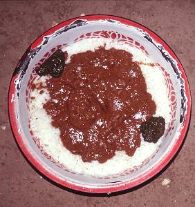

Mafe

Description
Mafe is an iconic West African dish, particularly popular in Mauritania, Senegal, and Mali. It consists of meat or vegetables simmered in a rich and creamy sauce made with peanut paste (peanut butter) and tomatoes.
This highly comforting stew perfectly blends the creaminess of peanuts with the spiciness of local spices. Traditionally served with plain white rice, mafe is the very symbol of home cooking and sharing.
Ingredients
- 500g chicken (or beef) pieces
- 4 tablespoons pure peanut butter
- 2 tablespoons tomato paste
- 2 carrots, 1 sweet potato, and 1 piece of cassava
- 1 chopped onion and 2 chopped garlic cloves
- Cooking oil, salt, pepper, and 1 whole Scotch bonnet pepper
Steps
- Brown the meat: Brown the chicken pieces in a pot with a little oil, then remove them.
- Create the base: In the same oil, saute the onions and garlic, then add the tomato paste diluted in a little of water.
- Add the peanuts: Dilute the peanut paste in warm water and pour it into the pot, stirring constantly to avoid lumps.
- Simmer the vegetables: Return the chicken to the pot, add the roughly chopped vegetables, cover with water, and simmer over low heat for 35 minutes.
- Reduce the sauce: Cook until a thin layer of oil rises to the surface, indicating that the mafe sauce is fully cooked.
HOME